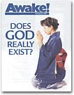

Organización interna de los Testigos de Jehová Salvador Estrada Esparza 01-11-2003 Comentarios Introducción Aspectos generales de los Testigos de Jehová Organización de los Testigos de Jehová: El cuerpo dirigente. La congregación: Trabajando y construyendo bienes para la Watch Tower. La congregación: Una grey de trabajadores y vendedores sumisos. Los superintendentes y los misioneros. La sucursal y más ingresos económicos. Producción y Distribución: La explotación de los jóvenes betelitas. Propuestas Experiencia personal  Anexos: Reproducción de la Lista de donaciones sugeridas. Orígenes de la secta de la Watch Tower (Diagrama) Cartas de Salvador Estrada a organismos oficiales de educación en México. Volver a la sección Sociedad y Religión Menú principal Comentarios Please enable JavaScript to view the comments powered by Disqus. Comments powered by Disqus
![[Awake! Humans: Just higher animals?]](ak3.jpg)
Comentarios
Comments powered by Disqus